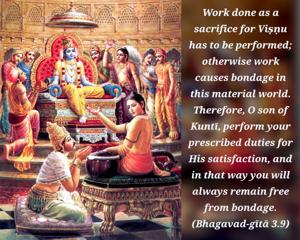

Work done as a sacrifice for Viṣṇu has to be performed; otherwise work causes bondage in this material world. Therefore, O son of Kuntī, perform your prescribed duties for His satisfaction, and in that way you will always remain free from bondage.

Since one has to work even for the simple maintenance of the body, the prescribed duties for a particular social position and quality are so made that that purpose can be fulfilled. Yajña means Lord Viṣṇu, or sacrificial performances. All sacrificial performances also are meant for the satisfaction of Lord Viṣṇu. The Vedas enjoin: yajño vai viṣṇuḥ. In other words, the same purpose is served whether one performs prescribed yajñas or directly serves Lord Viṣṇu. Kṛṣṇa consciousness is therefore performance of yajña as it is prescribed in this verse. The varṇāśrama institution also aims at satisfying Lord Viṣṇu. Varṇāśramācāravatā puruṣeṇa paraḥ pumān/ viṣṇur ārādhyate (Viṣṇu Purāṇa 3.8.8).
Therefore one has to work for the satisfaction of Viṣṇu. Any other work done in this material world will be a cause of bondage, for both good and evil work have their reactions, and any reaction binds the performer. Therefore, one has to work in Kṛṣṇa consciousness to satisfy Kṛṣṇa (or Viṣṇu); and while performing such activities one is in a liberated stage. This is the great art of doing work, and in the beginning this process requires very expert guidance. One should therefore act very diligently, under the expert guidance of a devotee of Lord Kṛṣṇa, or under the direct instruction of Lord Kṛṣṇa Himself (under whom Arjuna had the opportunity to work). Nothing should be performed for sense gratification, but everything should be done for the satisfaction of Kṛṣṇa. This practice will not only save one from the reaction of work, but also gradually elevate one to transcendental loving service of the Lord, which alone can raise one to the kingdom of God.